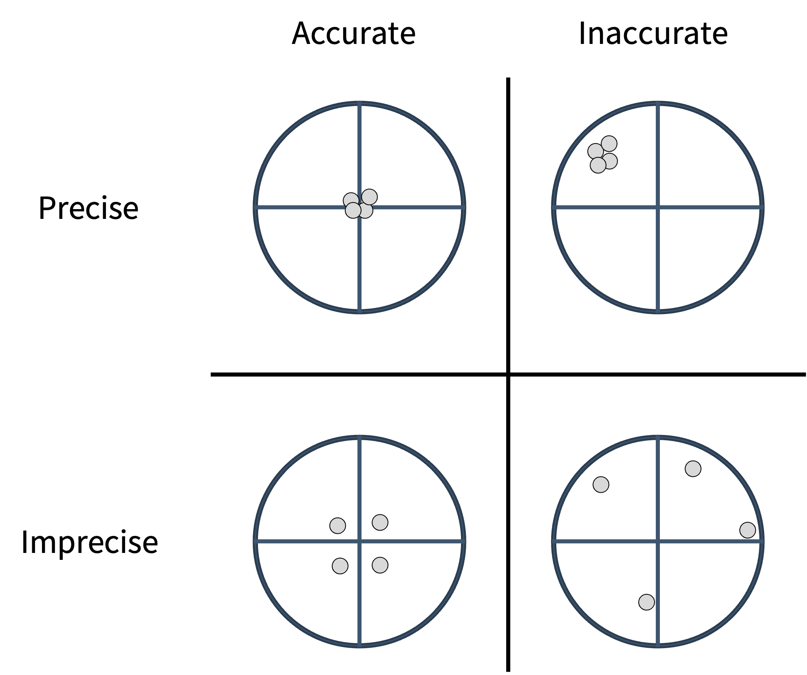
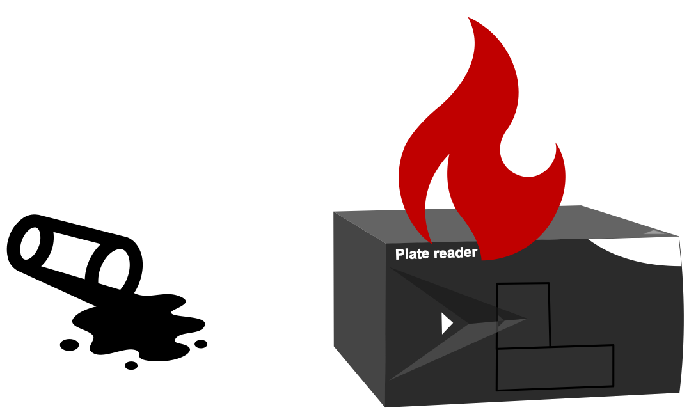
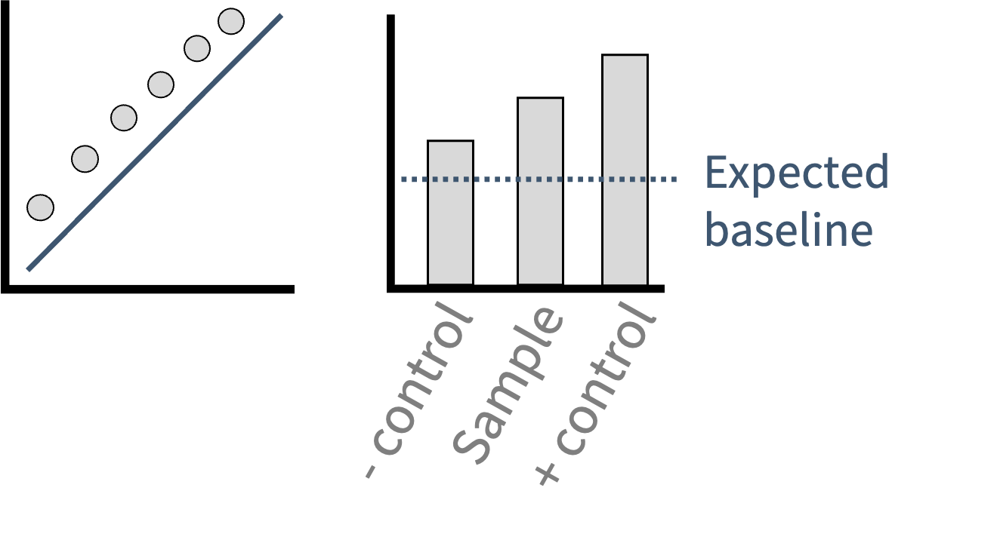
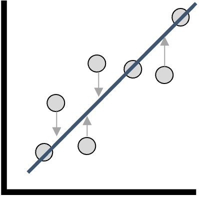
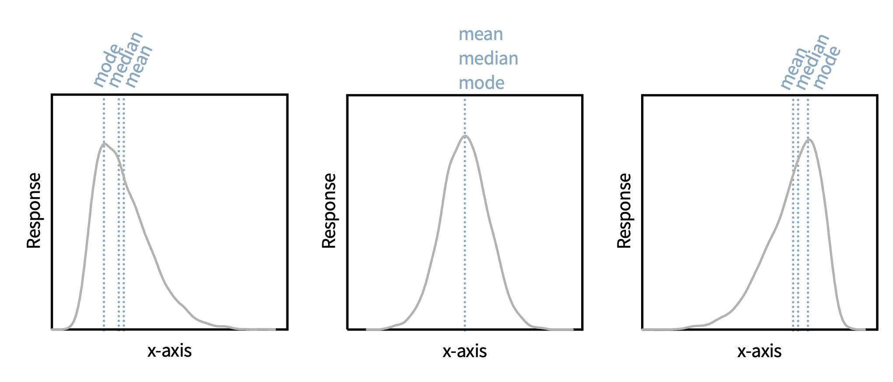

3. Descriptive Statistics
This session is about
- intro to descriptive statistics,
- summarizing a dataset,
- the concepts of measurement error,
- central tendency, and
- spread.
We will also compute those summaries in Python, introducing the two additional scientific data structures:
- the DataFrame and
- the array.
Remember that we have already seen lists, tuples, sets, and dictionaries.
Descriptive vs. Inferential Statistics
Descriptive statistics summarize and characterize the features of a dataset, typically a sample. Everything in this session is descriptive.
Inferential statistics draw conclusions about a larger population based on a sample. This requires hypothesis testing, confidence intervals, and regression. These topics are covered in the inferential statistics section.
The distinction matters: descriptive statistics describe only the data you have. Inferential statistics make claims that extend beyond your data, and those claims often carry more uncertainty, which must be quantified.
Precision and Accuracy
| Term | Definition |
|---|---|
| Precise | Results are tightly clustered (low random error) |
| Accurate | Results are close to the true value (low systematic error) |

Precision is measurable from your own data; it is reflected in the spread of replicates. Accuracy is harder to assess because it requires a known reference value. A highly precise but miscalibrated instrument will give tightly clustered results that are consistently wrong. This is why positive controls (detecting accuracy problems) and replicate measurements (characterizing precision) address fundamentally different questions.
What causes this spread in values? Experimental errors.
Types of Experimental Error
Every measurement contains error. The kind of error determines how it is addressed.
Gross errors are serious, identifiable errors that give reason to abandon the experiment or exclude the affected data. Examples include instrument failure, sample contamination, preparation/documentation mistakes. Data derived from gross errors are excluded from statistical analysis, but should still be documented.

Systematic (determinate) errors cause a global shift in results in one direction, affecting accuracy. They do not average out with more replicates. Common sources:

- Uncalibrated pipettes, balances, or spectrophotometers
- Unaccounted background signal (cuvette absorbance, blank fluorescence)
- Zero-setting errors
- Rounding in analysis software
Systematic errors are addressed during experimental design through calibration, proper controls, and comparative trials.
Random (indeterminate) errors cause results to scatter on both sides of the true value, affecting precision. They average out as sample size increases. Most statistical methods in this course assume that only random errors are present!

In order to evaluate errors, we need a way to store replicate data from samples and controls! We can do this in Python with a DataFrame from the tool “Pandas”.
Storing Replicate Data in Python: the DataFrame
To compute statistics, we first need a “container” for the data. The DataFrame (from Pandas) is a two-dimensional table that can be used to store data. Think of a DataFrame as a much more advanced Excel spreadsheet. DataFrames are extremely useful for data analytics, and as such are a primary structure used throughout this course!
Let’s look at how we can make a DataFrame and what a DataFrame looks like. Run this cell first to load the libraries used in this session and build a DataFrame of replicate measurements:
A DataFrame is not static. We can extract information from a DataFrame, and we can modify a DataFrame. A few essential operations are shown below: select a column, add a column, and take a slice of rows:
Always think row first, column second: this convention applies throughout pandas and numpy.
Want to do more things with DataFrames? Check out the Pandas documentation.
Population vs. Sample
We discussed populations and samples in the last session. As we collect replicates, we sample from a population.

| Population | Sample | |
|---|---|---|
| Mean | μ (fixed, unknown) | \(\bar{x}\) (estimated, varies between samples) |
| Standard deviation | σ (fixed, unknown) | s (estimated, varies between samples) |
| Variance denominator | N | n − 1 |
As sample size increases, sample statistics converge toward their population counterparts. This convergence is one of several reasons larger sample sizes are preferred.
Estimators
A sample statistic used to estimate a population parameter is called an estimator. For example, the sample mean \(\bar{x}\) estimates the true mean (μ). A good estimator is
- unbiased - its expected value equals the true parameter,
- consistent - converges as n grows, and
- efficient - smallest variance among unbiased estimators.
Central Tendency
Descriptive statistics summarize the features of a dataset. The three measures of central tendency are: mean, median, and mode.

Mean: the arithmetic average; sensitive to outliers.
\[\bar{x} = \frac{1}{n}\sum_{i=1}^{n} x_i\]
Median: the middle value when observations are ranked; robust to outliers. For \(n\) ordered values \(x_{(1)} \le \dots \le x_{(n)}\):
\[\tilde{x} = \begin{cases} x_{\left(\frac{n+1}{2}\right)} & n \text{ odd} \\[4pt] \tfrac{1}{2}\left(x_{\left(\frac{n}{2}\right)} + x_{\left(\frac{n}{2}+1\right)}\right) & n \text{ even} \end{cases}\]
Mode: the most frequently occurring value; most meaningful for discrete or categorical data.
The right measure depends on the data structure and the question. - For symmetric, approximately normal distributions, the mean is the best estimator of the population center. - For skewed distributions or datasets with outliers, the median better represents the typical value. - For categorical data such as the outcome of a vote, only the mode is meaningful because averaging numerical labels assigned to categories produces a result with no interpretable meaning.
Compute all three in Python:
Your turn! Compute the median of condition c2 by replacing the ______ with the correct code:
Use pystats.median() on the list c2.
median_c2 = pystats.median(c2)
print(median_c2)
median_c2 = pystats.median(c2)
print(median_c2)In each of the plots below, is mean, median, or mode the best descriptor of the results?
Variance and Standard Deviation
Variance describes how spread out the data are around the mean.
Population variance (when all possible observations are known, uncommon): \[\sigma^2 = \frac{1}{N}\sum_{i=1}^{N}(x_i - \mu)^2\]
where \(N\) is the number of replicates, \(x_i\) represents the replicate values, and \(\mu\) is the true mean.
Sample variance (the estimator used in practice): \[s^2 = \frac{1}{n-1}\sum_{i=1}^{n}(x_i - \bar{x})^2\]
where \(n\) is the number of replicates, \(x_i\) represents the replicate values, and \(\bar{x}\) is the estimated mean from the sample.
Notice two main differences:
- the true mean must be know for the population variance, whereas the the mean estimate is used for the sample, and
- The sample variance divides by \(n-1\), not \(n\). This is Bessel’s correction.
The intuition for Bessel’s correction: calculating the sample mean \(\bar{x}\) first consumes one piece of information from the data, leaving only \(n-1\) independent deviations from the mean. Dividing by \(n\) systematically underestimates the true population variance because the sample mean is always pulled toward the data points, making the deviations appear smaller than they truly are. Dividing by \(n-1\) corrects this bias, making the sample variance an unbiased estimator.
Because variance has squared units (if data are in units, variance is in units²), the units of variance are thus not directly interpretable alongside the raw data.
So what can we do?
The standard deviation takes the square root, restoring the original units: \(s = \sqrt{s^2}\).
Importantly, Bessel’s correction is propagated to the standard deviation, and thus, the difference between the population vs. sample must be considered when doing the calculations in python! Most packages use Bessel’s correction by default (such as statistics.stdev()), but numpy.std() uses \(n\) by default and needs to be corrected by passing ddof=1:
Your turn. Compute the sample standard deviation of c2 with numpy, choosing the correct ddof:
For a sample, the divisor is n − 1, so ddof should be 1.
sd_c2 = np.std(c2, ddof=1)
print(sd_c2)
sd_c2 = np.std(c2, ddof=1)
print(sd_c2)Summarizing a Whole DataFrame at Once
Instead of individually finding each statistic from a DataFrame, we can use a short line of code to describe the statistics of each column in a DataFrame: describe().
describe() reports count, mean, standard deviation (it uses \(n-1\), correctly), the minimum and maximum, and the quartiles for every column in one call. We will cover more of these metrics in later sessions. An example of how to use the code is provided below.
This single line is usually the first thing to run on a new dataset.
Error Propagation
When a calculated result depends on multiple measured quantities, each with their own uncertainty, the uncertainties combine according to specific rules.
Addition and subtraction — absolute uncertainties combine in quadrature: \[\sigma_z = \sqrt{\sigma_a^2 + \sigma_b^2} \quad \text{for} \quad z = a \pm b\]
Multiplication and division — relative uncertainties combine in quadrature: \[\frac{\sigma_z}{z} = \sqrt{\left(\frac{\sigma_a}{a}\right)^2 + \left(\frac{\sigma_b}{b}\right)^2} \quad \text{for} \quad z = a \cdot b \;\text{or}\; z = a/b\]
Reporting conventions: the ± notation carries two significant figures in the uncertainty; parenthetical notation carries one.
The formulas above assume \(a\) and \(b\) are independent. If they are correlated, a covariance term must be added.
For a addition: \[\sigma_z^2 = \sigma_a^2 + \sigma_b^2 + 2\,\mathrm{cov}(a,b)\]
For a subtraction: \[\sigma_z^2 = \sigma_a^2 + \sigma_b^2 - 2\,\mathrm{cov}(a,b)\]
For multiplication: \[\left(\frac{\sigma_z}{z}\right)^2 = \left(\frac{\sigma_a}{a}\right)^2 + \left(\frac{\sigma_b}{b}\right)^2 + \frac{2\,\mathrm{cov}(a,b)}{a\,b}\]
Division: same as multiplication, but the covariance term flips sign: \[\left(\frac{\sigma_z}{z}\right)^2 = \left(\frac{\sigma_a}{a}\right)^2 + \left(\frac{\sigma_b}{b}\right)^2 - \frac{2\,\mathrm{cov}(a,b)}{a\,b}\]
In this course we assume independent measurements; the correlated case is noted here only for awareness.
The same rules in Python:
Error propagation is everywhere in quantitative chemistry. Whenever a reported quantity is calculated from several measured values, the uncertainties of those inputs must be propagated so that the final uncertainty is honest. Software often handles the arithmetic, but understanding the principle determines whether reported uncertainties can be trusted.
Numpy Arrays
Alongside the DataFrame, the numpy array is the other core structure. The DataFrame is a two dimensional structure (spreadsheet). In contrast, the numpy array can be multidimensional. Arrays hold purely numerical data, are memory-efficient, and support vectorized operations (a calculation applied to every element at once). They appear mainly in regression, PCA, and Machine Learning; all of which will be covered in later sessions. Importantly, any DataFrame can be converted to one with .to_numpy().
When to use each: DataFrames are better for labeled, heterogeneous data (columns with different types, named indices). Arrays are better for pure numerical computation and as inputs to machine-learning functions, which always expect numerical arrays.
- Precision ≠ accuracy.
- Error types: gross (document and exclude), systematic (impacts accuracy), random (impacts precision).
- Central tendency: mean (sensitive to outliers), median (robust), mode (categorical).
- Sample variance/SD divide by n−1 (Bessel’s correction) —
numpy.stdneedsddof=1. - Error propagation: absolute errors add in quadrature for ±; relative errors for ×/÷.
- In Python, store data in a DataFrame (or array) and summarize it with
statistics/numpy/pandas.
In person session
TBD